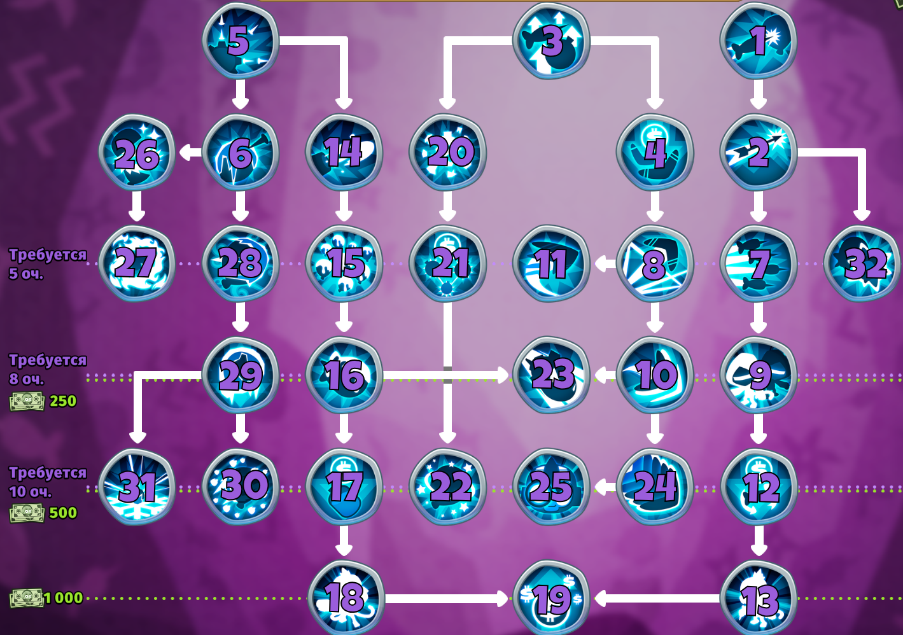
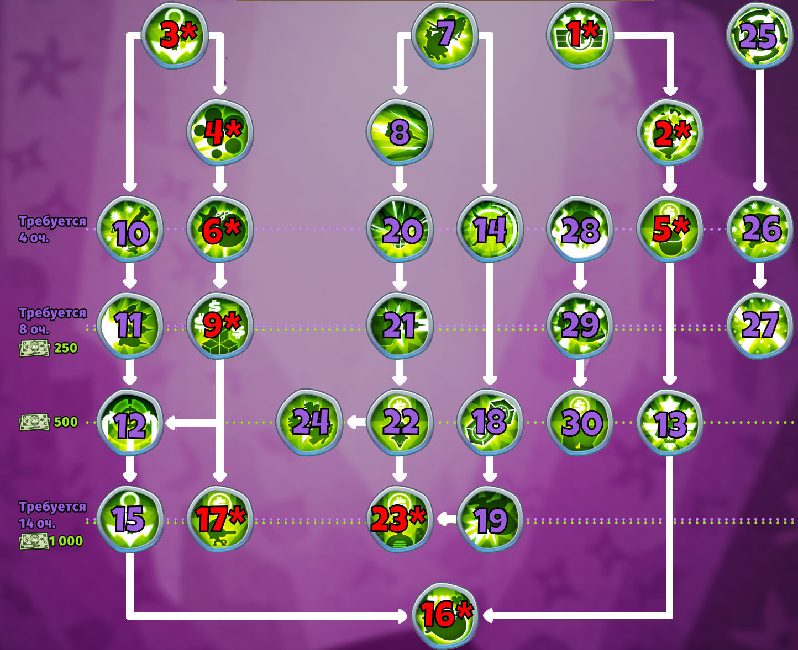
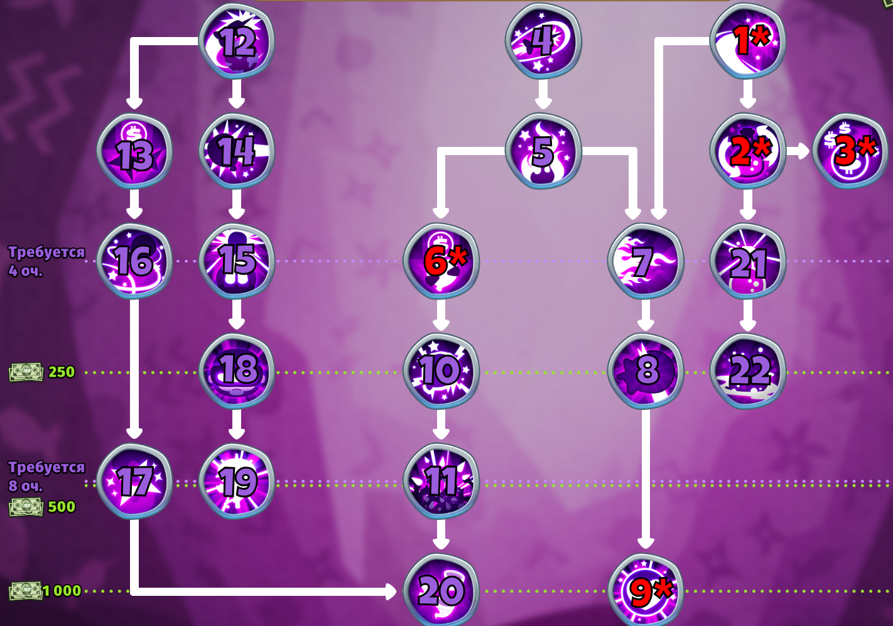
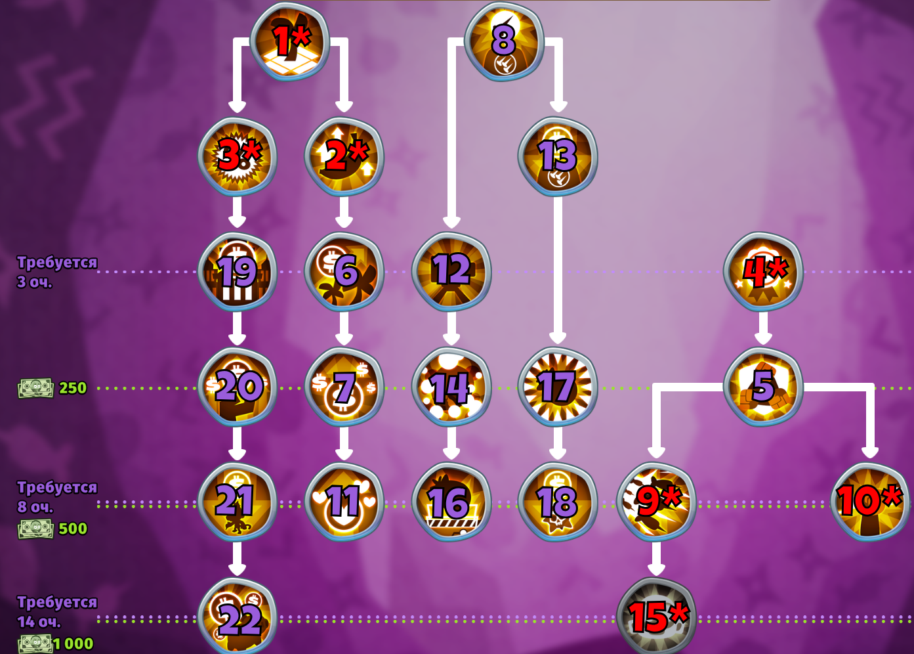
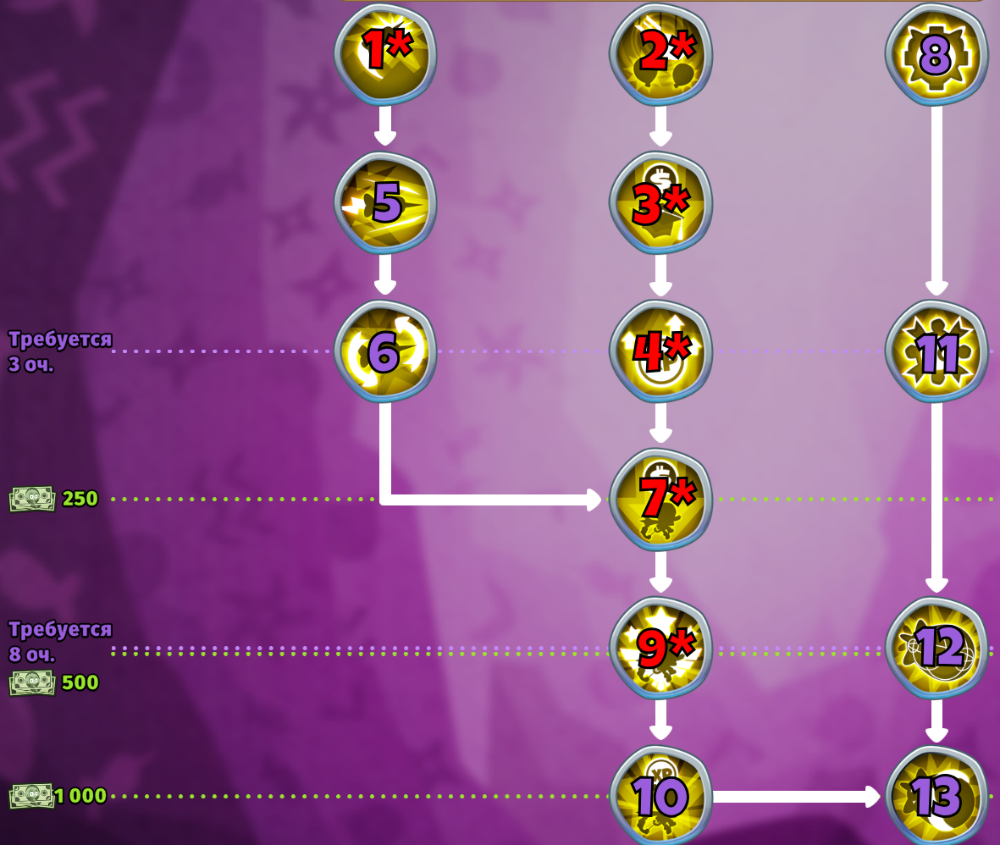
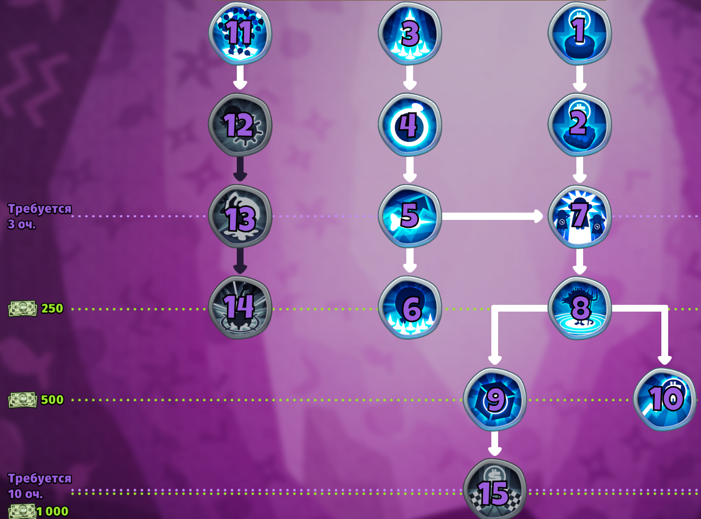

Лучшие обезьяньи знания
Автор гайда: Смотрящий Гранат в Steam
Обычные знания
В этой категории вы найдёте знания, делающие ваши основные башни ещё более мощными. Идеальный выбор для укрепления фундамента вашей обороны.
В качестве первой ветки для прокачки я бы не советовал её рассматривать, так как в других ветках есть улучшения, которые привязаны к ИГРЕ, а не БАШНЕ.
Военные знания
Военные знания усилят ваши военные башни, давая вам преимущество в борьбе с самыми крепкими воздушными и наземными врагами. Не пропустите возможность максимально увеличить огневую мощь.
Прокачка данной ветки может быть одной из первых, так как большинство военных обезьян - одни из самых полезных.
Магические знания
Разблокируйте секреты магических улучшений, чтобы призвать на поле боя непревзойдённые мистические силы. Магические башни станут вашими верными союзниками в сражении против натиска шаров.
Данную ветку я советую вам прокачивать 2-ой или 3-ей, так как друид 2-5-0 - одна из самых дисбалансных обезьян.
Знания поддержки
Исследуйте знания в области поддержки, чтобы улучшить эффективность ваших башен и оптимизировать ресурсное управление. Эти умения помогут вам укрепить оборону и расширить возможности на поле боя.
Тут всё довольно просто, полезно, но не всё.
Геройские знания
Сосредоточьтесь на улучшении своих героев, чтобы раскрыть их истинный потенциал. Улучшения в этой категории принесут новые способности и значительное усиление ваших лидеров.
Советуется к прокачке в самом начале игры, так как по большей части - Вы будете использовать героев в каждой игре.
Знания способностей
Углубитесь в изучение способностей, чтобы получить доступ к мощным временным бонусам, которые могут изменить ход битвы. Эти знания предоставят вам стратегическое преимущество в самые решающие моменты.
Я не считаю эту ветку впринципе чем-то стоящим, так как дойдя до 2-ого ветеранского ранга способностей накопилось у меня уже достаточно за всю игру, стоит к прокачке только 8-ое очко знаний ("Хорошие фермеры") и 9-ое очко знаний ("Бюджетное пополнение счёта"), ну и это если вы любите проходить боссов без каких либо ограничений.
